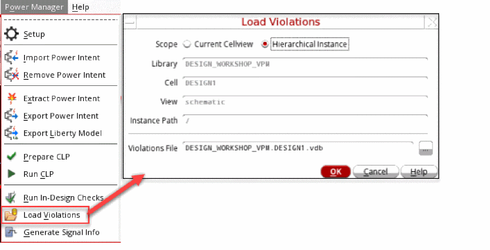
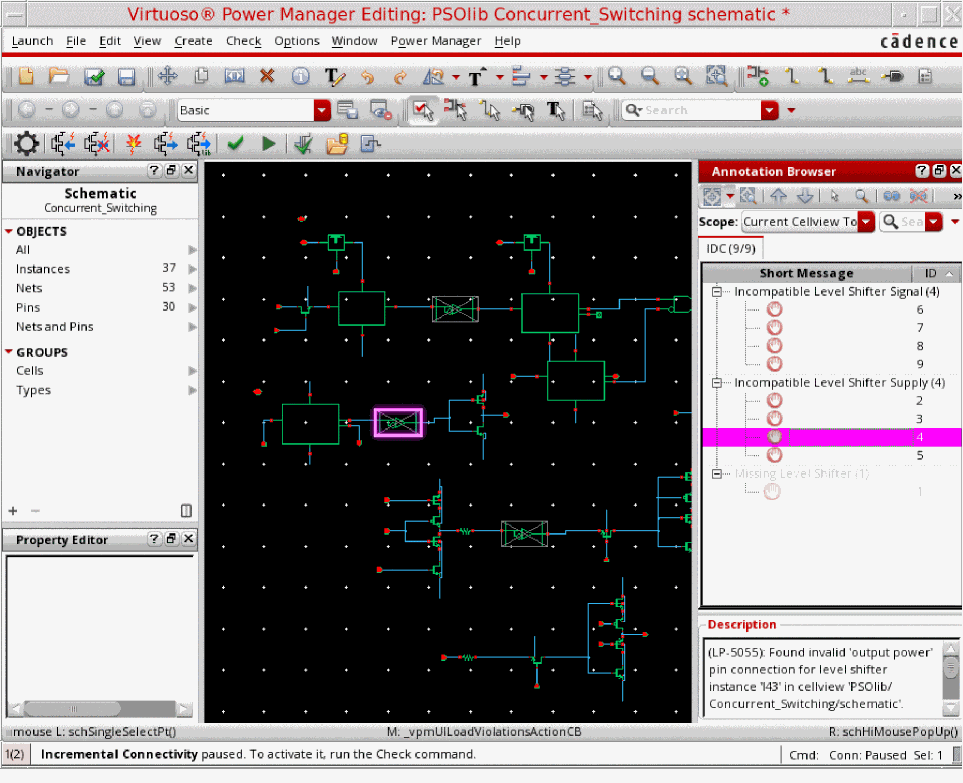
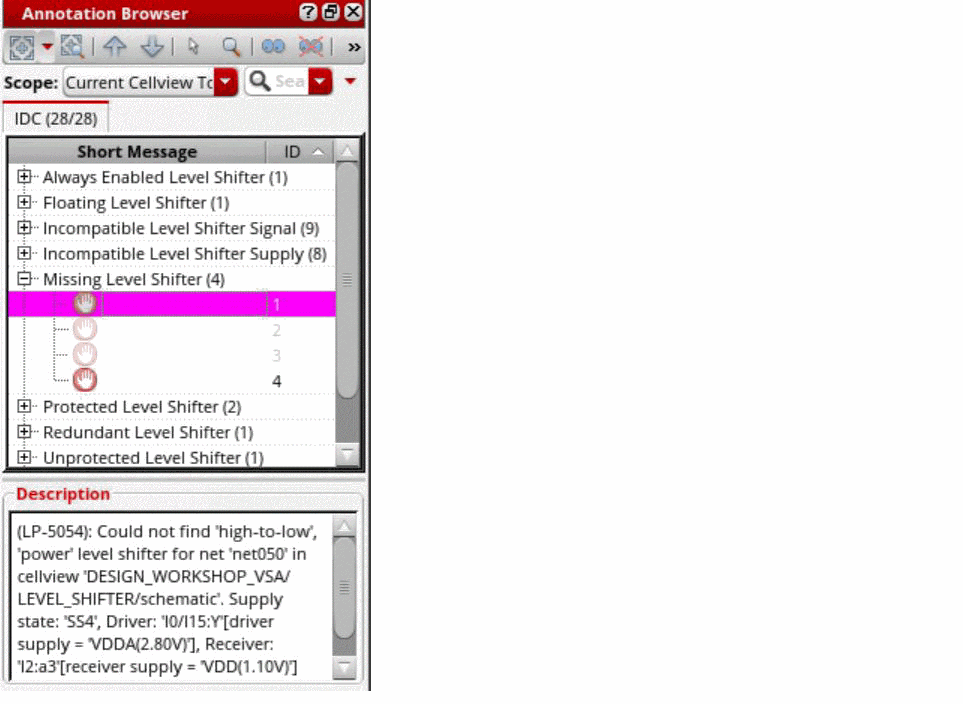
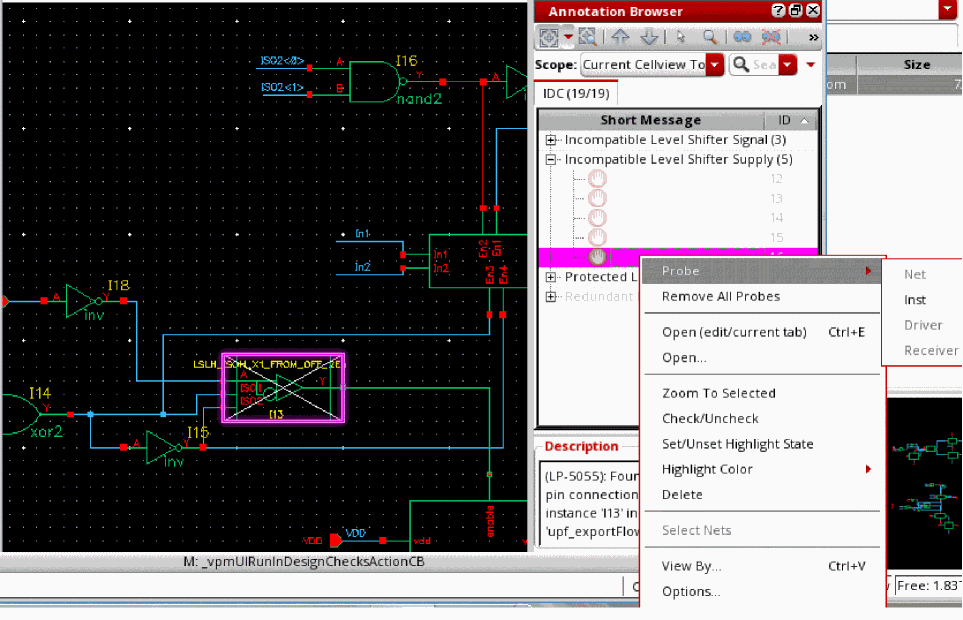

Loading the Violations Database
The errors generated are cross-probed to the accurate schematic location to enable the editing and correction. While analyzing violations using the Annotation Browser, the mode in which a marker cellview is opened depends upon the Annotation Browser options. This means that it is possible that the marker cellview is opened in edit mode even if the top cellview or current design is opened in read-only mode. If a marker cellview is opened in edit mode and you perform any action that attempts to close the marker cellview, you are prompted to save or discard the changes.
To load the violations database, perform the following steps:
-
Choose Power Manager – Load Violations.
 - Select the appropriate value for the Scope field. The Library, Cell, View, and Instance Path are read-only fields.
-
Specify the file name and click OK. The Annotation Browser displays the violations in the design.
 -
Specify the scope of the violations, which is based on the cellview hierarchy, to be displayed in the Annotation Browser.
Annotation Browser provides easy and in-context error browsing mechanism through context menu for the violation nodes.
Here is the list of the levels until which you can probe for various nodes:-
Right-click the
Always Enabled Level Shifternode. Then, click Probe – Inst/Driver/ Receiver. -
Right-click the
Incompatible Level Shifter Signalnode. Then, click Probe – Net/Inst/Driver/ Receiver. -
Right-click the
Incompatible Level Shifter Supplynode. Then, click Probe – Inst.
-
Right-click the
Missing Level Shifternode. Then, click Probe – Net/Driver/ Receiver. -
Right-click the
Protected Level Shifternode. Then, click Probe – Inst/Driver/ Receiver.
 -
Right-click the
Redundant Level Shifternode. Then, click Probe – Inst. -
Right-click the
Unused Enabled Level Shifternode. Then, click Probe – Inst/Driver/ Receiver. -
Right-click the
Bulk Errornode. Then, click Probe – Inst. -
Right-click the
Missing Isolationnode. Then, click Probe – Net/Driver/ Receiver. -
Right-click the
Incompatible Isolation signalnode. Then, click Probe – Driver/ Receiver. -
Right-click the
Redundant Isolation signalnode. Then, click Probe – Inst.
-
Right-click the
Related Topics
Defining the Severity of Design Checks
Checking a Design in Foreground Mode
Checking a Design in Background Mode
Return to top